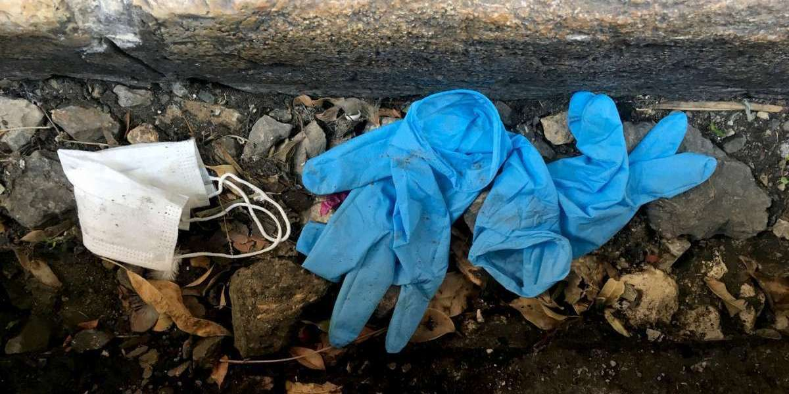
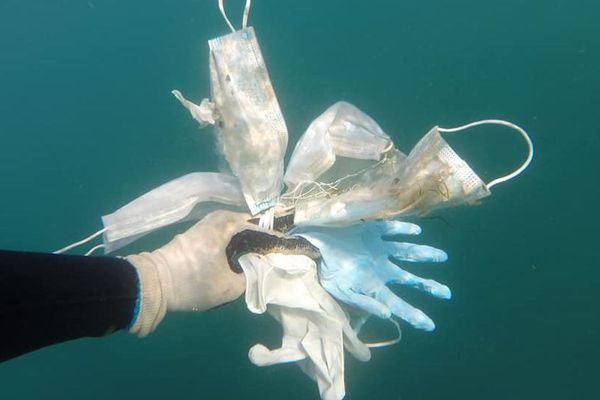

La mise en pause de l'activité sociale, ainsi que la fermeture des entreprises et le confinement(en mars) de la population
ont permis une diminution extraordinaire de la pollution environnementale dans le monde entier.
D'ici fin 2020 et peut-être même jusqu'en 2021 ou 2022, il y aura une grande baisse des émissions de CO2
Grâce au confinement, des animaux sauvages ont été observés dans certaines villes. Exemples:
Un puma à Santiago du Chili,un sanglier dans Barcelone,ou encore une civette en Inde.
Le premier pays à réduire son taux de pollution a été la Chine, plus grand pollueur au monde et épicentre de l'épidémie de coronavirus.
La concentration de gaz poluants a diminué de 30 à 50 % dans plusieurs villes chinoises, par rapport à 2019.
Selon les experts, l'épidémie a épargné plus de vies que les décès qu'elle a engendrées. En effet, 1,1 million de personnes en moyenne meurent chaque année, victimes de la pollution contre environ 100 000 personnes du covid-19 à l'heure d'aujourd'hui.
Malgré tous ces points positifs,il ne faudrait pas,une fois la pandémie derrière nous, revenir à nos anciennes habitudes.Hélas, cela n'a pas l'air dans prendre le chemin car de nouvelles mauvaises habitudes sont en train d'apparaître.
Les points négatifs
Vous avez probablement tous vu sur les trottoirs,dans les parkings,etc des masques chirurgicaux et des gants en latex usagés.Et vous vous êtes sans doute dit:"Pourquoi les gens font ça ?" Et bien,c'est essentiellement dû à l'irresponsabilité des gens.

Masque et gants jetable dans un caniveau
L'utilisation de ce genre de protections a explosé depuis l'apparition du covid.
Selon l'association de dépolution Wings of the Ocean,il y aurait plusieurs millions de tonnes de ces protections ,fabriqués depuis le début de la crise,en circulation.
Le confinement a agravé notre consommation de plastique à usage unique.
Ce phénomène peut s'expliquer par le fait que la plupart des gens ont le symptôme de la peur d'être infecté par le coronavirus.
En effet,la population a connu un retour significatif au tout jetable.
Cette nouvelle tendance du surembalage et du tout jetable est liée à l’effet rassurant du plastique à usage unique.
Or, il n'en n'est rien: Le virus survit plus longtemps sur du plastique que sur les autres matières.
En moyenne, le covid-19 peut survivre jusqu’à trois jours sur du plastique, contre 24 heures sur du carton.
Voici un reportage(de Brut) qui résume la situation actuelle concernant le plastique jetable
Les masques deviennent même dangereux car ceux que l'on trouve dans la ruepeuvent contenir le virus et ainsi transmettre ce-dernier à celui qui à le malheur de le ramasser.
Exemple:Un enfant qui se promène sur la plage peut ramasser un masque potentiellement infecté.L'enfant est ainsi succeptible de transmettre le virus à ces parents qui eux sont des personnes à risques et avec des symptômes(plus ou moins graves).
Les enfants sont assymptomatique: ils n'ont pas conscience du danger sanitaire.
Mais hélas, pour gérer ces nouveaux déchets,le système de collecte français n’est pas assez efficace.
Les déchets médicaux sont habituellement brûlés pour limiter toute infection potentielle.
Mais ici,ces déchets se retrouvent dans les ordures ménagères des particuliers ce qui rend plus difficile leur gestion.
De plus, certaines usines de recyclage ont fermées pendant le confinement, ce qui entraînent de nombreux retards dans le traitement des déchets recyclable.

Le risque est aussi ailleurs.Les masques (en polypropylène) et les gants(en nitrile) sont constitués de deux types de plastique résistants.
Ils ont un temps de dégradation d’environ 400 ans.
De plus,ces déchets peuvent ressembler à une méduse, ceci pouvant berner plus d’un animal marin.
Ajoutons à celà qu'ils peuvent se fragmenter en microplastiques, et à terme avoir de lourdes conséquences sur la santé.
Ce coronavirus a agravé le problème récurent de la polution des mers et des fleuves.